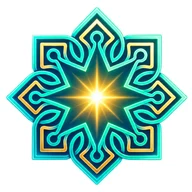
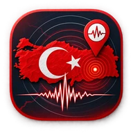
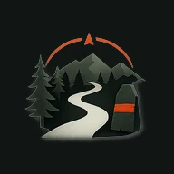
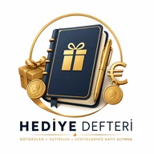
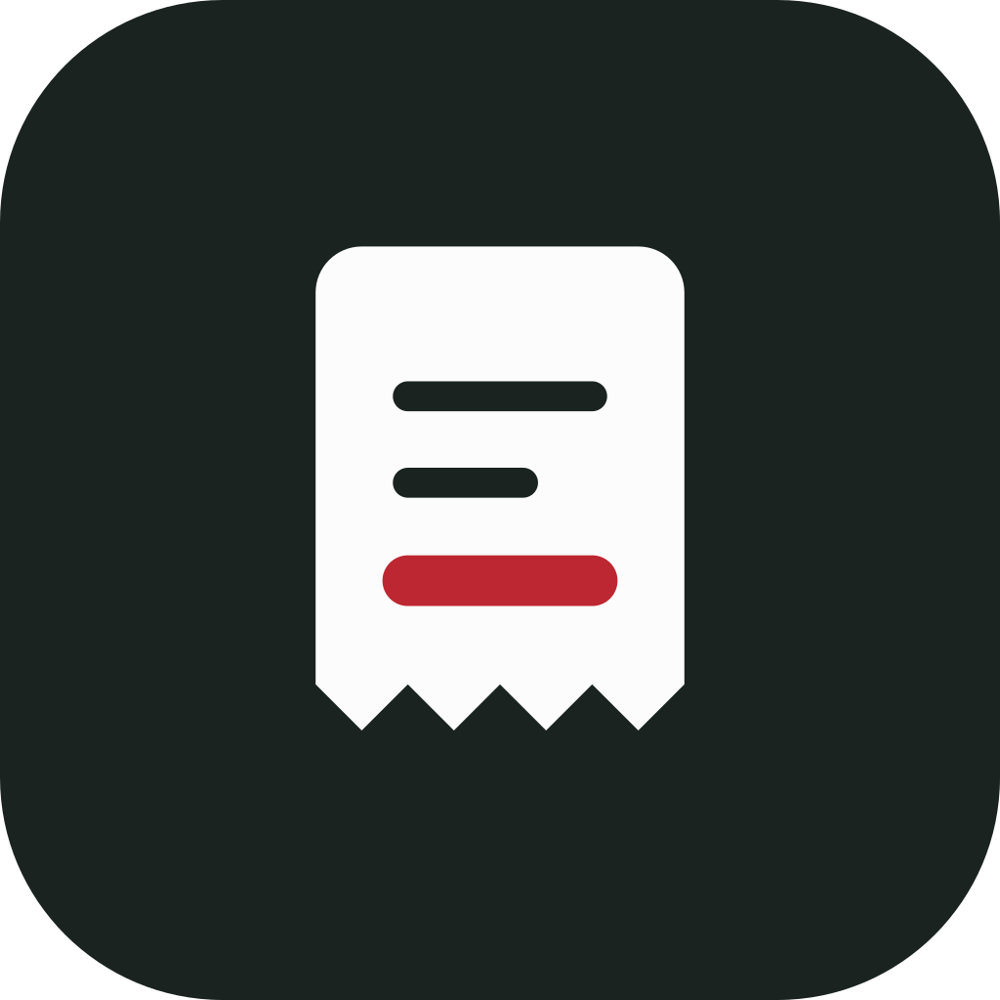
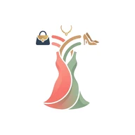
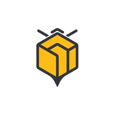
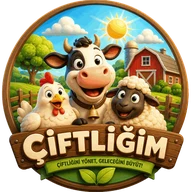

Kamil Saim
Geliştirdiğim web uygulamaları. Hepsi tarayıcıda açılır; çoğunu telefonunuzun ana ekranına ekleyip uygulama gibi kullanabilirsiniz.
İbadet ve maneviyat
- Beş VakitReklamsız, internetsiz çalışan namaz vakti ve kıble uygulaması.
- Kur'an'da Geçen DualarArapça metin, okunuş ve anlamıyla Kur'an duaları.
- Kur'ân-ı Kerîm ve MeâliArapça tilâvet ve Türkçe meâl, 52 bölüm dinleme.

SinerjiOrtak zikir halkası, hatim dağıtımı, dua ve kandil programları.sinerji.web.app- BereketZekât, nisap ve varlık takibi.
Harita ve keşif

ZelzeleTürkiye depremlerini haritada anlık takip; AFAD ve Kandilli verisi.- TürbedarTürbe, kümbet ve mezarların ortak haritası.turbedar.org

PatikaRota ve aktivite takibi.
Defterler ve takip
- Borç DefteriBorç ve alacaklarınızı takip edin.

Hediye DefteriVerilen ve alınan hediyelerin kaydı.
FişTakipFişin fotoğrafını çekin; mağaza, ürünler ve tutar kendiliğinden yazılsın.- Mutfak ListemMutfak listesi.

STYLIShKıyafetlerinizi saklayın, kendi dolabınızdan kombin oluşturun.- İzlenceFilm günlüğü: takip, öneri ve analiz.izlence.web.app
Tarım ve hayvancılık

BeebookArıcının el defteri; arıcılar için yönetim uygulaması.- Bal DefterimBal hasadı, sipariş, stok ve zekât takibi.

ÇiftliğimKüçükbaş ve büyükbaş hayvancılık yönetimi.